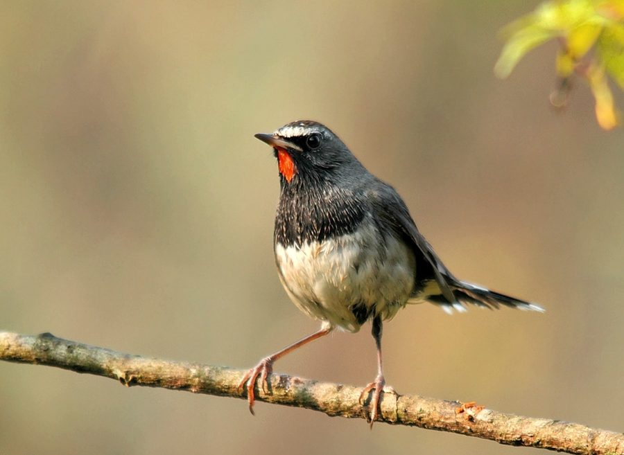

व्हाइट-टेल्ड रूबीथ्रोटWhite-tailed Rubythroat
Luscinia pectoralis · Muscicapidae · BRD-0338

- Scientific name वैज्ञानिक नाम
- Luscinia pectoralis (Gould, 1837)
- Family कुल
- Muscicapidae
- Hindi हिंदी
- व्हाइट-टेल्ड रूबीथ्रोट
- Local names स्थानीय नाम
- white-tailed rubythroat, himalayan rubythroat
- Status here यहाँ की स्थिति
- native
- Movement आवागमन
- Winter visitor
- Known from कहाँ दर्ज
- Others have published records from the wider Awadh–Purvanchal plain, none yet from Basti–Ayodhya अवध–पूर्वांचल से दूसरों के प्रकाशित अभिलेख, बस्ती–अयोध्या से अभी नहीं
- IUCN IUCN
- LC
- Review समीक्षा
- not yet reviewed
When to look कब देखें
Winter visitor शीतकालीन प्रवासी. Expected mainly in January, February, March, April, November, December. मुख्यतः जनवरी, फ़रवरी, मार्च, अप्रैल, नवंबर, दिसंबर में अपेक्षित।
In winter it descends to the foothills and adjacent plains (Baker 1924, p. 93); GBIF records in Uttar Pradesh fall between November and April. All migrants and visitors →
Tell it apart from इनसे अलग पहचानें
व्हाइट-टेल्ड रूबीथ्रोट / White-tailed Rubythroat
Luscinia pectoralis (Gould, 1837) — Muscicapidae
व्हाइट-टेल्ड रूबीथ्रोट — हिमालय की ऊंची पर्वत श्रृंखलाओं से सर्दियों में तराई और अवध के मैदानी इलाकों में आने वाला एक छोटा, छिपकर रहने वाला प्रवासी पक्षी है। वयस्क नर के गले पर माणिक्य (रूबी) जैसा चमकता हुआ लाल धब्बा होता है जो काली चौड़ी छाती से घिरा रहता है। इसकी सबसे प्रमुख पहचान इसकी पूंछ है, जिसके किनारे के पंखों की जड़ें और सिरे सफेद होते हैं, जिन्हें यह फुदकते समय पंखे की तरह फैलाकर प्रदर्शित करता है। यह दलदली घास, नरकुल के झुरमुटों और गन्ने के खेतों के किनारे जमीन पर रेंगते हुए कीड़ों की तलाश करता है।
Quick Identification त्वरित पहचान
| Feature | Description | |
|---|---|---|
| Habit | Secretive, ground-dwelling, skulking flycatcher-chat of dense wet thickets | |
| Size | Compact robin-like chat roughly the size of a [[bluethroat\ | Bluethroat]] |
| Throat | Brilliant ruby-crimson gorget framed by velvety black on chin and breast | |
| Tail | Dark blackish-brown tail with broad pure white base and white tips on outer feathers | |
| Upperparts | Slaty-grey above, tinged with ashy, with a narrow white forehead and supercilium | |
| Underparts | Solid black breast band in breeding dress, shading to white on lower belly | |
| Female | Duller brown above, lacking red throat; tail dark brown with lateral feathers tipped white, but has no white on the base of the tail |
Field tip: Watch dense scrub and wet thickets in early morning. Look for a robin-like bird hopping low near water that cocks and fans its tail.
हिंदी:
यह नीलकंठी (ब्लूथ्रोट) के आकार का एक छोटा पक्षी है जिसके गले पर लाल रूबी जैसा धब्बा होता है।
नर की पूंछ की जड़ और सिरे सफेद होते हैं; मादा की पूंछ के केवल बाहरी सिरों पर सफेद रंग होता है, पूंछ की जड़ में सफेद नहीं होता।
यह पानी के पास झाड़ियों और घास में जमीन पर रहता है।
Morphology आकारिकी
Measurements as given by Baker (1924):
| Measurement | Range |
|---|---|
| Wing | wing 68 to 78 mm. (Baker 1924 as Calliope pectoralis pectoralis) |
The White-tailed Rubythroat is a distinctive chat exhibiting pronounced sexual dimorphism. In adult males, the forehead and a short distinct supercilium are pure white. The lores, cheeks, and sides of the head are velvety black. The upper plumage is deep slaty-grey, subtly tinged with ashy-brown.
The chin and center of the throat are vivid ruby-crimson. The breast is solid black, fringed with grey in fresh autumn dress. The tail feathers are blackish-brown, the lateral feathers white on rather more than the basal half and tipped white (Baker 1924, p. 92). The lower abdomen and under tail-coverts are white, suffused with grey along the flanks.
Adult females have earthy olive-brown upperparts and a buff-white throat without scarlet or black; the tail is dark brown, the lateral feathers tipped with white, but lacking white on the base of the tail (Baker 1924, p. 93). The bill is black. The irises are dark brown. The legs and long slender tarsi are dark brown or plumbeous-brown.
Vocalisations. Baker (1924, p. 93) gives its habits as those of the Siberian Rubythroat, whose song he describes as "a sweet but rather monotonous little song" sung from the upper twigs of a low bush (p. 92).
हिंदी:
इसके पंखों की लंबाई 68 से 78 मिमी होती है (बेकर 1924)।
नर के गले पर लाल धब्बा और छाती पर काली पट्टी होती है, जबकि मादा भूरे रंग की होती है।
बेकर (1924) के अनुसार इसकी आदतें साइबेरियन रूबीथ्रोट जैसी हैं, जो झाड़ी की ऊपरी टहनियों पर बैठकर मीठा पर एकरस गीत गाता है।
Behaviour & Ecology व्यवहार और पारिस्थितिकी
Luscinia pectoralis has habits much the same as those of Calliope calliope, frequenting wooded or scrub-jungle localities, especially such as are near water (Baker 1924, pp. 92–93). It feeds on insects on the ground and among grass, reeds, and low bushes.
When foraging, it frequently jerks its tail up over its back semi-expanded (Baker 1924, p. 93).
हिंदी:
यह पक्षी पानी के पास झाड़ियों, नरकुल और घास वाले इलाकों में रहना पसंद करता है (बेकर 1924)।
यह जमीन पर और निचली झाड़ियों में कीड़े तलाशता है।
यह फुदकते समय अपनी पूंछ को थोड़ा फैलाकर पीठ के ऊपर उठाता है (बेकर 1924)।
Life Cycle / Phenology जीवन चक्र
The White-tailed Rubythroat is a non-breeding winter visitor to northern India, descending to the foothills and adjacent plains in winter (Baker 1924, p. 93). GBIF records in Uttar Pradesh fall between November and April. It does not breed within Uttar Pradesh.
Its breeding grounds lie at high elevations in the Himalayas, where it builds a domed nest of grass on the ground among thick grass tussocks or scrubby bushes (Baker 1924, p. 93). A small clutch of eggs is laid before descending to foothill valleys and plains for the winter.
हिंदी:
यह सर्दियों में तलहटी और मैदानी इलाकों में उतर आता है (बेकर 1924)।
यह उत्तर प्रदेश में प्रजनन नहीं करता; गर्मियों में यह हिमालय के ऊंचे पहाड़ों पर चला जाता है।
वहां यह घनी घास या झाड़ियों के बीच जमीन पर घास का गुंबदनुमा घोंसला बनाता है (बेकर 1924)।
Host Plants or Prey आहार
The White-tailed Rubythroat feeds on insects on the ground and among low vegetation (Baker 1924, p. 93):
- Insects found on the ground in wooded and scrub localities (Baker 1924, p. 93)
- Invertebrates found among grass, reeds, and low bushes near water (Baker 1924, p. 93)
हिंदी:
इसका मुख्य आहार जमीन पर और पानी के पास घास, नरकुल तथा निचली झाड़ियों में मिलने वाले कीड़े हैं (बेकर 1924)।
Predators / Natural Enemies शत्रु
Baker (1924, p. 93) notes that this species "seems to be a favourite foster-parent" for the Common Cuckoo (Cuculus canorus, race telephonus) on the North-West Frontier, laying its eggs in the rubythroat's nest.
हिंदी:
बेकर (1924) के अनुसार उत्तर-पश्चिम सीमांत पर यह पक्षी कॉमन कोयल (कक्कू) का पसंदीदा पालक पक्षी (होस्ट) प्रतीत होता है जो इसके घोंसले में अपने अंडे देती है।
Agricultural / Human Relevance कृषि प्रासंगिकता
No source opened for this atlas describes this bird's dealings with people. It is protected under the Wildlife (Protection) Act, 1972.
हिंदी:
इस एटलस के लिए खोले गए किसी स्रोत में मनुष्यों से इसके संबंध का वर्णन नहीं है। यह वन्यजीव (संरक्षण) अधिनियम, 1972 के तहत संरक्षित है।
Expected Locally स्थानीय रूप से अपेक्षित
Not a field record. Written from published accounts for eastern Uttar Pradesh. No confirmed local sighting yet — if you have seen it, that is what the atlas needs.
अभी तक स्थानीय पुष्टि नहीं। यह विवरण प्रकाशित स्रोतों से है, किसी अवलोकन से नहीं।
Search scrub and grass near water in the Terai forests and around Lucknow between November and April.
GBIF holds published records from the wider Awadh–Purvanchal plain, none yet from Basti–Ayodhya.
A first record would be a photograph of the bird showing its throat or tail pattern with place and date, sent through the About page.
Distribution वितरण
Global range: High-altitude breeder across the mountains of Central Asia and the Himalayas, from Turkestan and Afghanistan to Tibet and western China; winters in northern South Asia.
In India: Breeds at alpine elevations in Kashmir, Ladakh, Himachal Pradesh, and Uttarakhand; winters in the sub-Himalayan foothills and adjacent northern plains.
In Uttar Pradesh: Winter records documented in Lakhimpur Kheri, Balrampur, Bahraich, and Lucknow between November and April.
In Basti district / eastern UP: No published records from Basti or Ayodhya; known in eastern UP from winter records in the northern Terai wetlands.
हिंदी:
यह मध्य एशिया और हिमालय के ऊंचे पहाड़ों से लेकर उत्तरी भारत के मैदानों में फैला हुआ है।
उत्तर प्रदेश में इसके शीतकालीन रिकॉर्ड लखीमपुर खीरी, बलरामपुर, बहराइच और लखनऊ से मिले हैं।
Research Questions शोध प्रश्न
- What are the microhabitat characteristics (reed height, soil moisture) that predict winter territory occupancy in northern UP marshes? / उत्तरी उत्तर प्रदेश के दलदलों में इस पक्षी के रहने के लिए नरकुल की ऊंचाई और मिट्टी में नमी का क्या महत्व है?
- How do seasonal water-level drawdowns in Terai jheels influence winter territory shifts into adjacent sugarcane crops? / तराई की झीलों में पानी कम होने पर क्या यह पक्षी पास के गन्ने के खेतों में चला जाता है?
- What is the ratio of male to female individuals overwintering in lowland floodplain reedbeds?
- How does the harvesting of winter sugarcane affect the foraging stability of wintering chats?
- Can amateur birders differentiate female White-tailed Rubythroats from female Bluethroats by checking outer tail patterns in field photos? (A student can compare tail photos taken at wetland margins.)
Similar Species मिलती-जुलती प्रजातियाँ
| Species | How to tell apart | हिंदी | |
|---|---|---|---|
| [[siberian_rubythroat\ | Siberian Rubythroat]] (Luscinia calliope) | Entire tail uniform olive-brown with no white base or tips; white moustachial and superciliary stripes; warm olive-brown upperparts | साइबेरियन रूबीथ्रोट |
| [[bluethroat\ | Bluethroat]] (Luscinia svecica) | Tail has bright orange-rufous basal patches rather than pure white; male has bright blue and chestnut throat patch | हुसैनी पिद्दा |
Field rule: The striking pure white base and white tips on the outer tail feathers, slate-grey upperparts, and brilliant ruby throat bordered by black identify the male White-tailed Rubythroat.
हिंदी:
साइबेरियन रूबीथ्रोट की पूंछ पूरी भूरी होती है और हुसैनी पिद्दे की पूंछ पर नारंगी धब्बे होते हैं; व्हाइट-टेल्ड रूबीथ्रोट की पूंछ के किनारे सफेद होते हैं।
Taxonomy & Classification वर्गीकरण
Original description. Described by John Gould in 1837 in Icones Avium (part 2, pl. 4), under the basionym Calliope pectoralis. The type locality is the Western Himalayas.
Synonyms and historical names. Stuart Baker (1924, p. 92) treated the species under Calliope pectoralis pectoralis. Modern checklists place it in the genus Luscinia or retain Calliope. The IUCN Red List catalogs the species under Calliope pectoralis.
Subspecies. Multiple subspecies are recognized; western Himalayan breeding populations wintering in northern India belong to the nominate race Luscinia pectoralis pectoralis.
Family and order placement. Order Passeriformes (songbirds); family Muscicapidae (Old World flycatchers and chats); genus Luscinia.
IUCN status rationale. Evaluated as Least Concern (LC) by the IUCN Red List (as Calliope pectoralis) due to its extensive breeding range across the Asian mountains and stable populations.
हिंदी:
जॉन गोल्ड ने 1837 में इसका वर्णन किया था। यह मस्किसापिडी (फ्लाईकैचर) कुल का सदस्य है और संकटमुक्त (LC) है।
Photo Gallery फोटो गैलरी
No photos yet — add field photos to media/species/white_tailed_rubythroat/ and run node scripts/sync_photos.js.
Photos needed आवश्यक फोटो
- [ ] Adult male showing ruby throat and black breast (रूबी जैसा लाल गला और काली छाती)
- [ ] View showing white tail patches when tail is spread (पूंछ के सफेद पंख दिखाती मुद्रा)
References संदर्भ
- Gould, J. (1837). Icones Avium, or Figures and Descriptions of New and Interesting Species of Birds. Part 2. Published by the author, London, pl. 4 (as Calliope pectoralis).
- Baker, E. C. S. (1924). The Fauna of British India, Including Ceylon and Burma. Birds. Vol. 2. Taylor & Francis, London, p. 92 (as Calliope pectoralis pectoralis).
- Ali, S. & Ripley, S. D. (1987). Compact Handbook of the Birds of India and Pakistan. Oxford University Press, New Delhi.
- Grimmett, R., Inskipp, C. & Inskipp, T. (2011). Birds of the Indian Subcontinent. 2nd ed. Christopher Helm, London.
- BirdLife International (2016). Calliope pectoralis. The IUCN Red List of Threatened Species 2016: e.T103768539A94219642. doi:10.2305/iucn.uk.2016-3.rlts.t103768539a94219642.en
- GBIF Occurrence Data — Luscinia pectoralis, India (2025).
Source file: species/fauna/birds/white_tailed_rubythroat.md